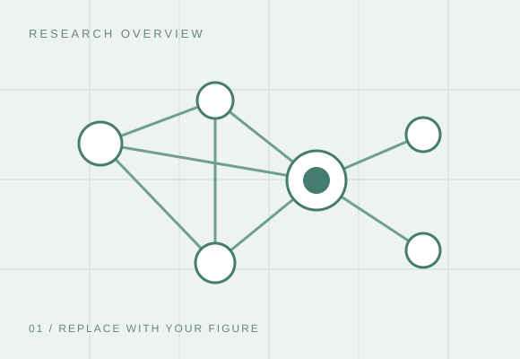
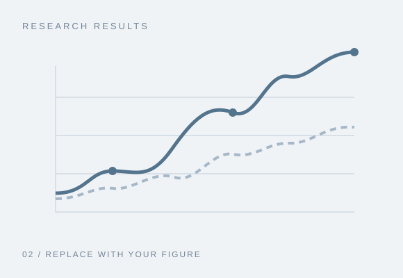

RESEARCH PROFILE
Academic personal website from Yunho Jo
국립공주대학교 AI 에너지 및 배터리 솔루션 연구실(AI-EBS LAB)에서 배터리 에너지 저장 시스템과 셀 밸런싱 제어를 연구하고 있습니다. 배터리 시스템의 효율적인 에너지 활용과 셀 간 균형을 위한 제어 방법에 관심을 두고 있습니다.
연구 관심 분야
- Battery Energy Storage Systems
- Cell Balancing Control
대표 연구
전체 논문 보기현재 표시된 연구 실적과 연구 그림은 교체용 예시입니다.
PUBLICATIONS
Publications
Journals
2026
International Conferences
2026

Domestic Conferences
등록된 국내 학술대회 논문이 없습니다.
위 항목과 분류는 입력 양식 예시입니다. 실제 게재 상태와 서지정보로 교체하세요.
PATENTS
Patents
[특허명] 핵심 기술을 활용한 방법 및 장치
해당 기술의 목적, 적용 분야와 차별점을 간략히 설명하세요.
- 발명자
- 홍길동, 공동발명자 1, 공동발명자 2
- 출원인
- ○○대학교 산학협력단
- 출원번호
- [출원번호 입력]
- 출원일
- [YYYY.MM.DD]
- 등록번호
- [등록번호 입력]
- 등록일
- [YYYY.MM.DD]
[특허명] 연구 결과를 적용한 시스템 및 방법
- 발명자
- 홍길동, 공동발명자 1
- 출원인
- ○○대학교 산학협력단
- 출원번호
- [출원번호 입력]
- 출원일
- [YYYY.MM.DD]
위 항목은 입력 양식 예시입니다. 공개 가능한 특허 정보로 교체하세요.
RESEARCH PROJECTS
Projects
[과제명] 핵심 연구 기술 개발 및 응용
연구과제의 목표와 주요 내용을 두세 문장으로 소개하세요.
- 참여 기간
- [YYYY.MM] – 현재
- 지원기관
- [지원기관명]
- 주관기관
- [주관기관명]
- 담당 역할
- [예: 알고리즘 설계, 실험 수행, 데이터 분석]
- 주요 성과
- [논문, 특허, 시제품 등 공개 가능한 성과]
[과제명] 산업 현장 문제 해결을 위한 공동 연구
- 참여 기간
- [YYYY.MM] – [YYYY.MM]
- 협력기관
- [기업 또는 기관명]
- 담당 역할
- [본인이 맡은 연구 및 개발 내용]
- 주요 성과
- [공개 가능한 연구 결과]
위 항목은 입력 양식 예시입니다. 실제 참여한 과제 정보로 교체하세요.